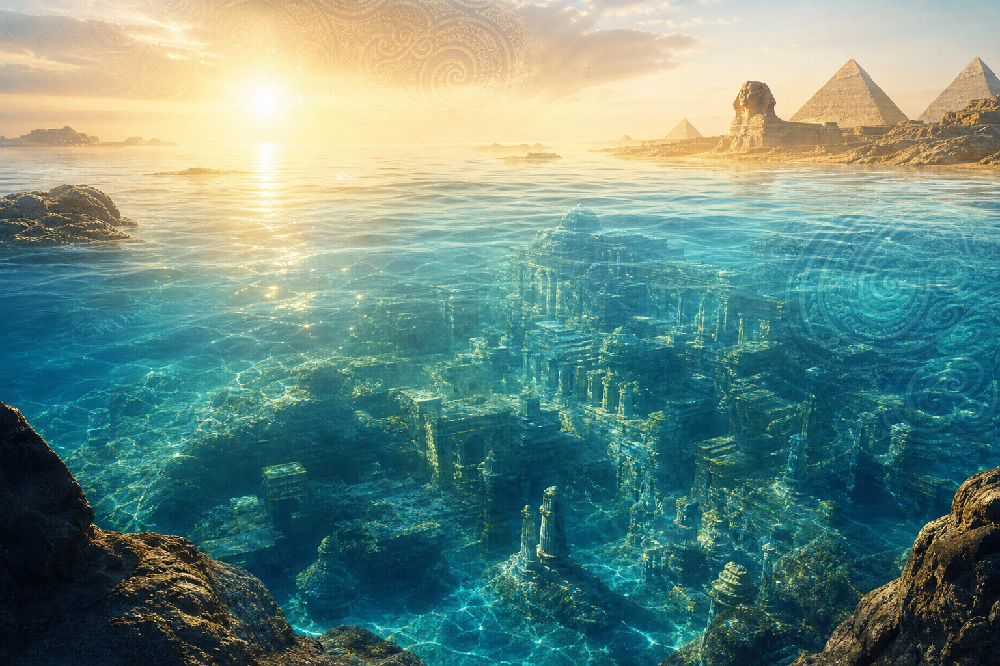
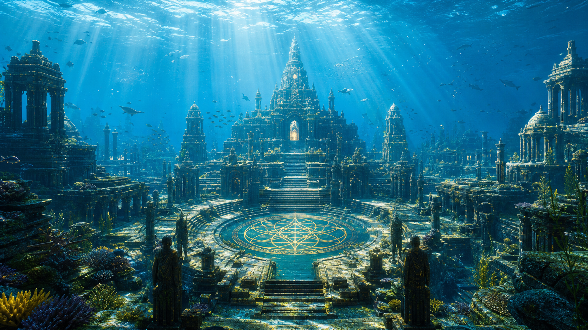
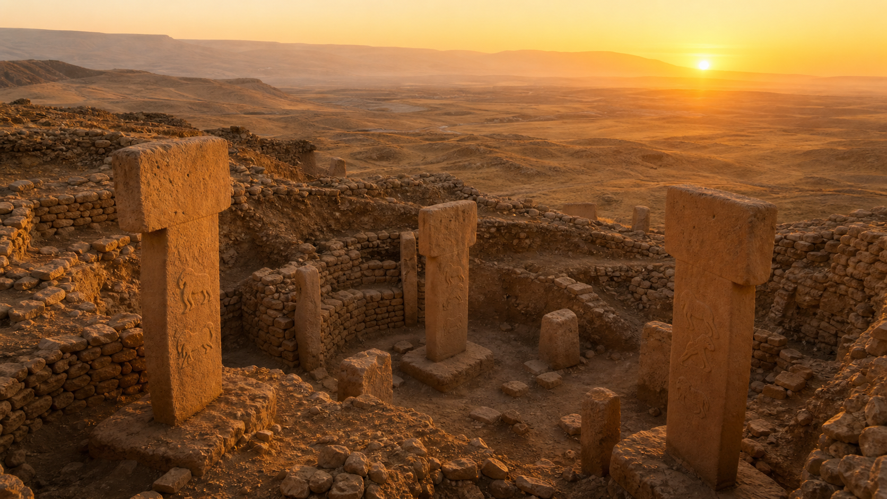
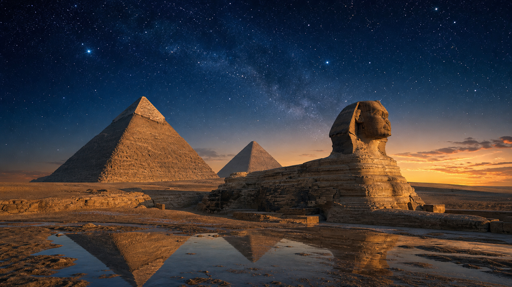
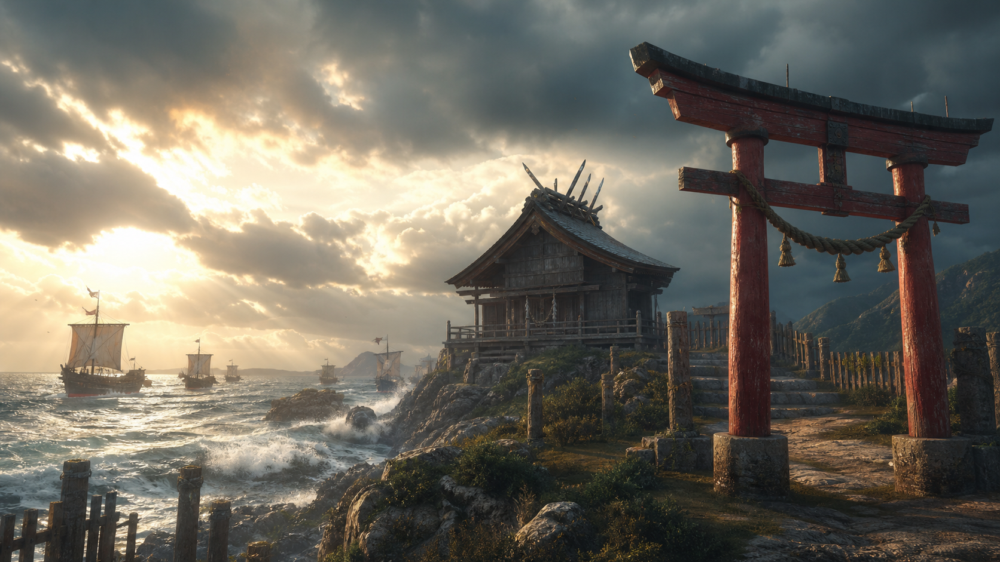
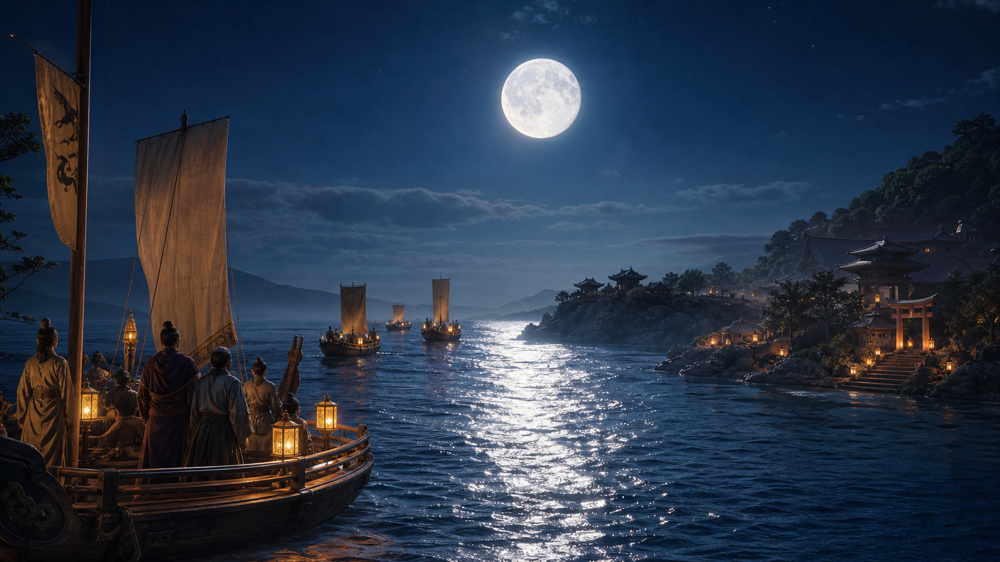
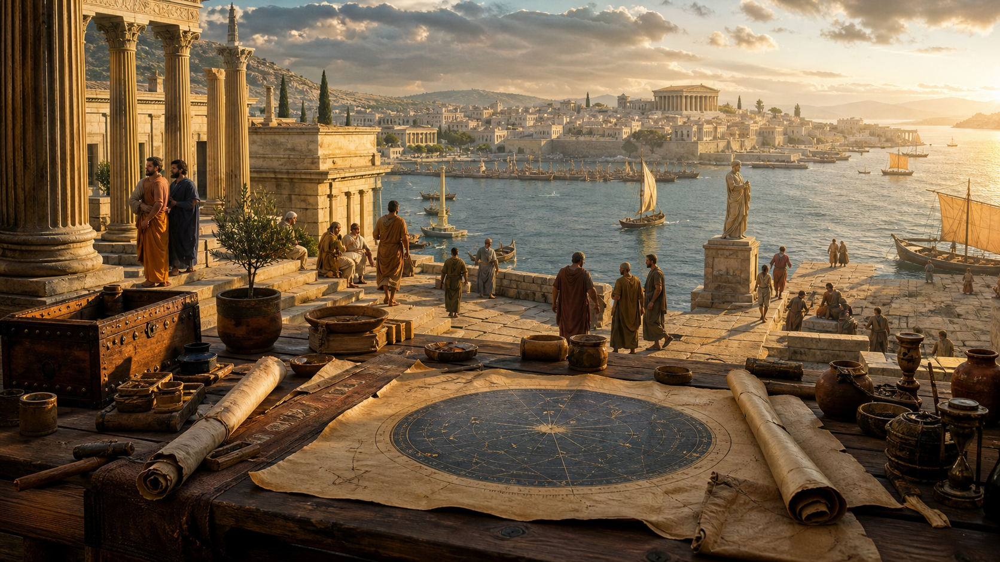

レジュメ / 歴史仮説
日本と世界の歴史の転換、最初のレジュメ
ムー・アトランティス、大洪水、ギョベクリ・テペ、出雲、スサノオ、古史古伝、アメリカ、AI開示までを一本の歴史仮説として整理する出発点。

Journal
ムー・アトランティス、大洪水、ギョベクリ・テペ、出雲、スサノオ、古史古伝、アメリカ、AI開示までを一本の歴史仮説として整理する出発点。

ムーとアトランティスを、断定ではなく文明の記憶と想像力として読み解く。
世界各地の洪水伝承を、災害の記憶と文明分散の物語として読む。

トルコの古代遺跡を、祭祀・共同体・文明誕生の視点から眺める。

ピラミッドと古代エジプトを、実証とロマンを分けながら眺める。

ラー・ター、記録の大広間、ヘルメス、ヒューリンの再会譚を「こんな話もある」という伝承として読む。
氷期後の環境変化、人の移動、神話の拡散を一本の系譜として眺める。

出雲神話を、海の道、国づくり、地方王権の記憶として読む。

月氏や秦氏をめぐる説を、事実・仮説・物語に分けて整理する。
神武東征を、建国神話・移動・統合の物語として読む。

約3000年前以降の地中海世界を、宗教・哲学・交流の視点で読む。
釈迦とイエスを、宗教的断定ではなく精神史の大きな転換として眺める。
宗教と秘密結社を断定的陰謀論ではなく、近代の象徴体系として整理する。
AIとUAP開示を、恐怖ではなく文明の転換点として読み解く。
九鬼文書を、古史古伝の一つとして慎重に読み解く。
竹内文書の壮大な世界観を、史実断定ではなく思想と物語として読む。
宮下文書を、富士山信仰と古代王権伝承の交差点として読む。
ほつまつたえを、記紀とは異なる神名・神統譜を持つ文献として読む。
九鬼文書、竹内文書、宮下文書、ほつまつたえの共通項を抽出する。
風土記、古語拾遺、祝詞を手がかりに、記紀の外側に残った神々と地方伝承を読み解く。

UAP開示、政府の秘密、超古代文明説を、証拠と物語の力に分けて楽しく読み解く。

公的な透明化、科学的検証、世界観の変化を怖がらずに見つめる。

古代文明のロマン、現代の検証、自然再生への希望を分けながら読む。

信仰、芸術、火山の記憶、伏流水。日本の象徴を楽しく、やさしく読み直す。

神話、海洋文明、記憶の断片から、今を明るくする想像力を受け取る序章。
土、水、光、地域の記憶。暮らしの近くで世界が回復する兆しを見つける。
Themes
忘れられた土地の記憶、古代文明、神話、口承を、想像を楽しみながら読み直します。
フリーエネルギーや発明史を、夢と観察の両方を大切にしながら眺めます。
水脈、土壌、植生、循環する暮らしをテーマに、小さな希望の実践を集めます。
About
このサイトは、過去にこんな歴史があったかもしれないと楽しく思いを馳せながら、 自然や暮らしや人の心が少しずつ良い方向へ向かうヒントを集める場所です。 断定よりも余白を、対立よりも好奇心を大切にして、読後にやさしい行動がひとつ増えるような記事を公開していきます。